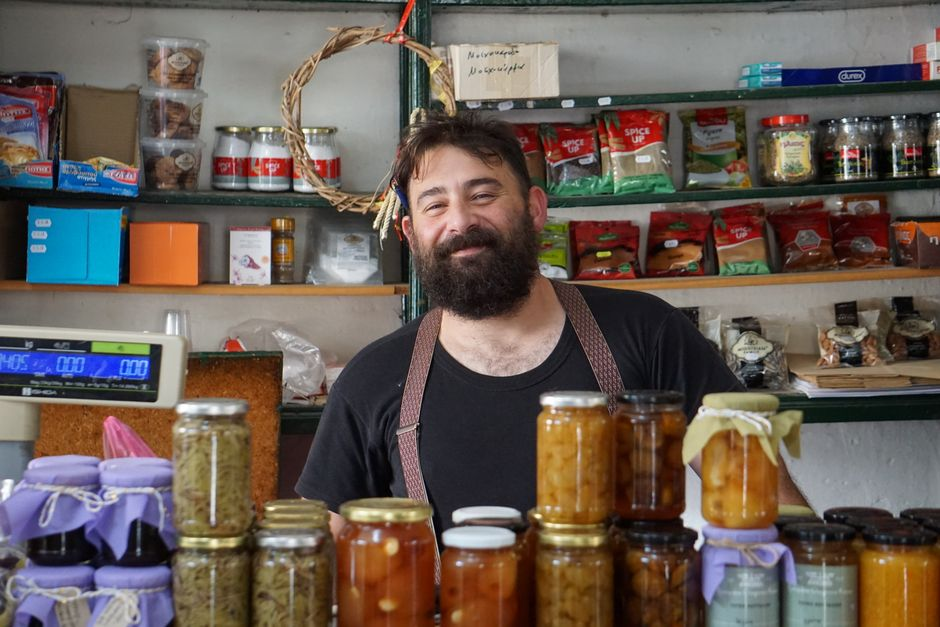

정책자금 자가진단

사업자등록번호로 바로 확인 — 국세청 공개 API(사업자등록 상태·과세유형)를 사용합니다. 조회한 번호는 저장되지 않습니다. ※ 게시판 정적 페이지에서는 조회 서버 연결 시 활성화됩니다 — 그전에는 7문항을 이용하세요.
7문항 정밀 진단
이 진단의 원리
소상공인정책자금(소진공 직접대출)과 지역신용보증재단 보증부대출의 공고문 공통 4대 요건 — ① 사업 상태·업력 ② 매출 규모 ③ 신용 상태 ④ 업종 제한 — 을 체크리스트화한 것입니다. 같은 요건이라도 자금별로 우선순위가 달라지는데, 창업자금·청년·재도전 등 "타깃 소상공인"에 해당할수록 후보가 늘어나도록 설계했습니다.
핵심 분기점은 신용 상태입니다. 신용이 양호하면 소진공 직접대출이 주 경로이고, 신용이 약한 축이면 같은 은행 대출이라도 지역신용보증재단의 보증서를 끼고 가는 보증부대출이 주 경로가 됩니다. 두 경로는 신청 사이트도, 상담 창구도 완전히 다르므로 직접대출과 보증부대출의 차이를 먼저 읽으시는 걸 권합니다.
진단 후 다음 3단계
- 증명서류 2종 미리 발급 — 사업자등록증명·부가가치세과세표준증명 (홈택스 5분). 어떤 자금을 가도 필수입니다.
- 공고 원문 확인 — 소상공인정책자금(ols.semas.or.kr) 공지사항에서 현재 접수 중인 공고의 마감일·예산 잔량을 확인하세요. 직접대출은 예산 소진형이라 월 초 공고를 놓치면 다음 달까지 기다려야 합니다.
- 지역 신보 문의 — 보증부 후보가 떴다면 사업자등록지 관할 지역신용보증재단. 지점 방문이 어려우면 대부분 모바일 guarantee 신청 앱을 운영 중입니다.
본 도구는 공개 공고문의 일반 요건을 요약한 자가진단이며, 신청 자격·한도·금리를 보증하지 않습니다. 실제 요건은 신청 시점의 공식 공고문이 우선하며, 제한 업종 판정·우대 요건은 세부 기준이복잡합니다.